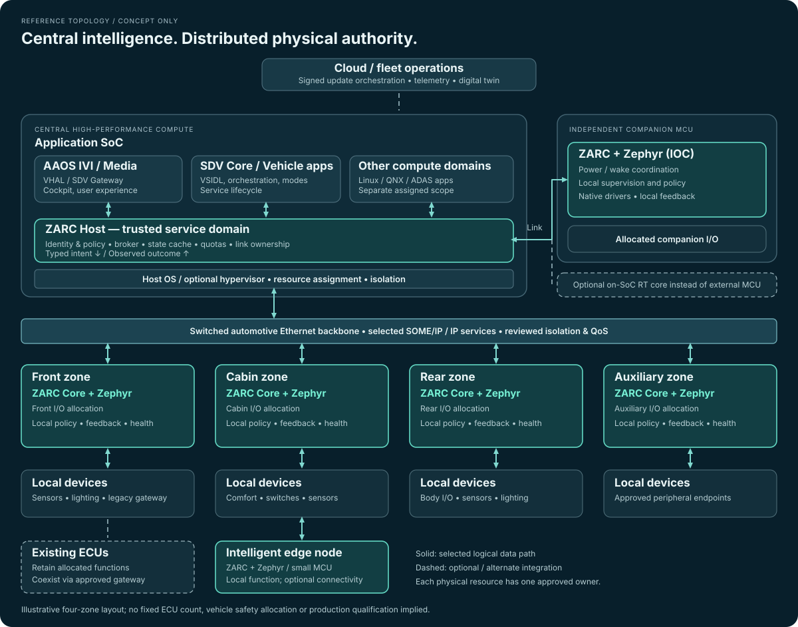

Central compute and ZARC Host
Choose any component to explore its role and connection.
REFERENCE DESIGN / PROPOSED · NOT QUALIFIED
A suggested next-generation E/E architecture: consolidate vehicle intelligence on high-performance compute, distribute deterministic physical control across ZARC + Zephyr controllers, and connect both through approved, versioned service contracts.
INTERACTIVE / VEHICLE CUTAWAY
Rotate the transparent model, isolate network layers and select an electronic component to see its placement and responsibility. The model is an illustrative engineering concept, not a vehicle wiring or safety allocation.
This deterministic scenario is separate from controller feedback. No physical signals or actuators are connected.
Vector fallback · loading the shaded 3D model when supported.
Drag to orbit · Zoom into the cabin · Toggle body, interior and network layers · Select an ECU or sensor for its role.
Choose any component to explore its role and connection.
ZARC + Zephyr is proposed at local controller boundaries. High-level vehicle orchestration remains on the application SoC. Brake, steering, propulsion, battery and perception systems are independently allocated domains, shown for interoperability only; they are not qualified ZARC control functions. Network selections and exact sensor placement depend on the OEM. SOME/IP is a service protocol over IP, not a separate physical bus.
01 / VEHICLE SYSTEM
The preferred starting point is an independent companion MCU and trusted host, then zonal expansion. An integrated RT core and intelligent edge nodes are alternatives or additions where justified by the product allocation.

Power coordination, local health and allocated physical behavior continue within approved limits during application SoC outages.
Consolidate selected body and peripheral I/O by physical zone with separate ownership and bounded failure domains.
Use an allocated RT core and native IPC when reset, memory, clocks, device ownership and interference are demonstrably controlled.
Reuse the portable core for sensor and device-local behavior on smaller MCUs; host and network features are optional.
02 / RESPONSIBILITY
ZARC is neither a second vehicle operating system nor a generic hardware tunnel. Its role is the physical-control and integration layer below vehicle-service orchestration.
| Layer | Owns | Does not own |
|---|---|---|
| Cloud / fleet | Update campaign, telemetry, fleet policy and test twin | Direct actuator control or local safety reaction |
| AAOS SDV / vehicle applications | Vehicle modes, service intent and guest lifecycle | Measured physical state or direct peripheral ownership |
| ZARC Host | Client authorization, mapping, correlation and sole allocated link ownership | Real-time hardware decisions |
| ZARC Connect / Core | Typed admission, bounded state, local policy, supervision and feedback | OEM-wide mode or unallocated actuator authority |
| Native Zephyr / target | Threads, timers, queues, interrupts, drivers, device tree and selected native services | Vehicle policy or automatic safety certification |
| Existing ECUs / safety islands | Their approved independent functions | Unreviewed transfer of safety responsibilities to ZARC |
Product profiles select only required components; no parallel general-purpose RTOS abstraction is introduced.
03 / OPERATION
Example: a benign body indicator. Requests are mediated, and only independently observed feedback establishes the result.
Local allocated behavior is not tied to a guest. Broker restart invalidates caches and requires a new session and fresh snapshot.
Unavailable or stale observations are explicit; other independently allocated domains continue according to their approved policy.
Guest readiness is distinct from physical power state. Signed, compatible updates and recovery must be independently verified per target.
04 / ADOPTION
Suggested staged adoption, not a fixed vehicle bill of materials or a committed release roadmap.
CURRENT EVIDENCE BOUNDARY
Repository evidence includes desktop, native simulator, generated gRPC and local COVESA fixtures on recorded revisions. Real vehicle power, network and safety behavior, physical target qualification, production MCU authentication and actual OEM AAOS deployment remain open. Safety-critical control stays in existing approved domains unless separately allocated and qualified.
Inspect implementation status ↗Review the full future capability matrix, partner ownership, working commands and release evidence requirements.
05 / TECHNICAL ALIGNMENT
These upstream references inform the proposal; they do not establish an endorsement or interoperability certification.
Execution profiles, service orchestration and inter-VM communications.
Upstream documentation ↗ZEPHYRNative cross-domain communication with selected backends.
Upstream documentation ↗COVESASelected standard middleware runtime for service integration.
Upstream project ↗2035 DESIGN BASELINE · PROPOSED
Standalone and hybrid architectures remain first-class alongside central compute, intelligent zones and real-time islands. The proposed management plane reconciles intended, configured, built, deployed and observed system identities. It is not an additional mandatory runtime layer.
Existing sedan telemetry remains a read-only simulated reference. Proposed system-wide introspection, component replacement and physical validation are open.
Read the canonical 267-requirement Z12 candidate · Implementation evidence and limits